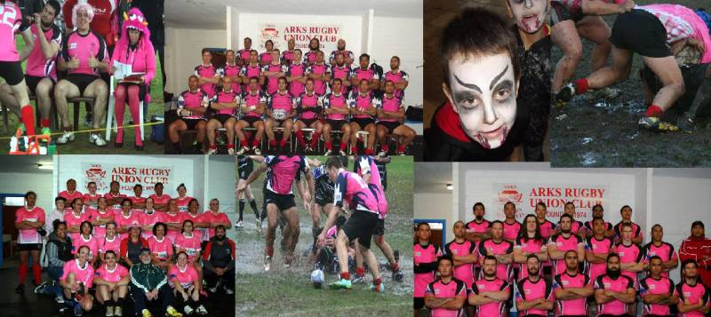
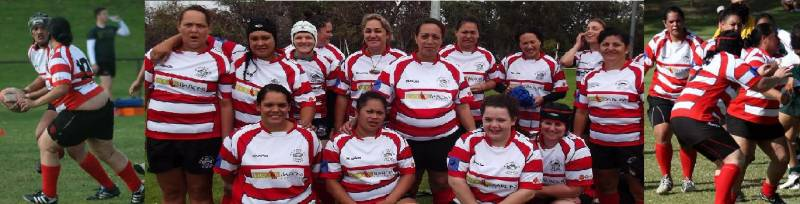

A big thank you to all who helped make ARK's Pink Day such a success. The combined efforts of sponsors, friends and members proved that a generous community Spirit is a powerful force
Paragraph the first
Any interested persons are asked to contact the club via email at arkstreasurer@hotmail.com
Paragraph the second
ARKs Rugby Club welcomes any new members playing or not. The aim of our club is to promote rugby and to provide a facility for all those whoe love to play the game. To play for ARKs you do not need to have the abilities of a Dan Carter or a David Pocock just the love to participate and to enjoy the comradery that rugby generates.
ARKs Rugby Club has current players from the age of 6 (ARKs Junior Ruby) to the ripe old age of 66 (Gilksy - ARKs Golden Oldies) and every age in-between. Fid you are looking for a family friendly club and a club that is dedicated to all facets of rugby the ARKs is the club for YOU.
Follow us on social media
Visit www.arksjunior.rugbynet.com.au for our ARKs Juniors website. Follow our ARKs players of the future now.
Arkives in Japan
We welcome back ARKives our over 35's team who have been competing in the Wordld Goden Oldies Festival in Fukuoka Japan.
By all accounts they had a great time and are now putting plans in place for the next carviaal in Argentina
ARKs are in need of team assistants for this season, we are looking for any volunteers for our home and away games and would welcome anyone wishing to give a hand - Contact arkstreasurer@hotmail.com
Information for joining ARKs in 2015 either as a player or a memeber can be obtained by emailing your name, contact number and postal address to: arkstreasurer@hotmail.com
Find out more about the 'History of ARKs club' by clicking on the club information link on the left of the screen
ARKs Membership
All friends and family members of ARKs are invited to become members of our social club. Social membership fees are $30 and entitle you to take advantage of bar facilities and evening meals on Thursday nights. For an extra $10 you can become an associate member with full voting rights, that is $40. For more information or membership forms please approach any committee member.
A big welcome and thant you to all those new member who have taken up volunteer postions within he club this year!!